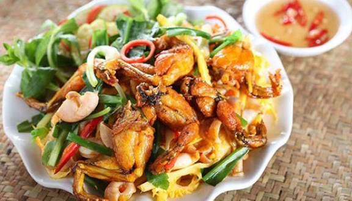

Chi Tiết Sản Phẩm
Ếch Om
Hưng Yên với nhiều món ngon và sản vật nổi tiếng, bởi vậy với mỗi người con xa quê đã từng một lần thưởng thức món ếch om Phượng Tường, hẳn sẽ muốn sớm gác lại công việc, về nhà trong cái nắng mật ong, ngồi dưới tán cây râm mát thưởng thức cùng gia đình hương vị dân dã ấy. Ừ thì chế biến công phu, nhưng bù lại, vị béo, vị thơm ngon cứ đọng mãi ở vị giác, khiến tất cả mệt mỏi, lo toan tan biến hết. Bởi ở đây chất chứa cả hồn quê, tiếng nô đùa của lũ trẻ, và bờ sông loang loáng chỉ muốn thỏa thuê ngụp lặn. Thân thương và hồn hậu thế, ai chẳng muốn về?!